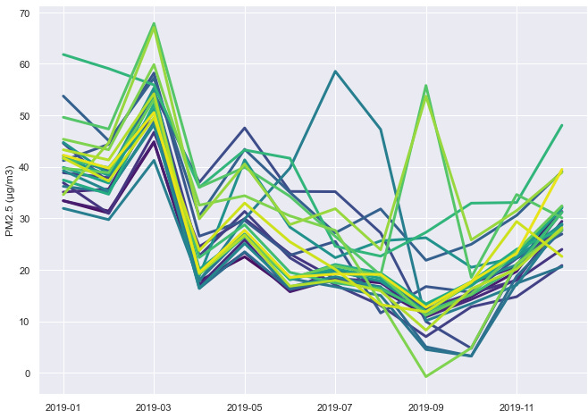
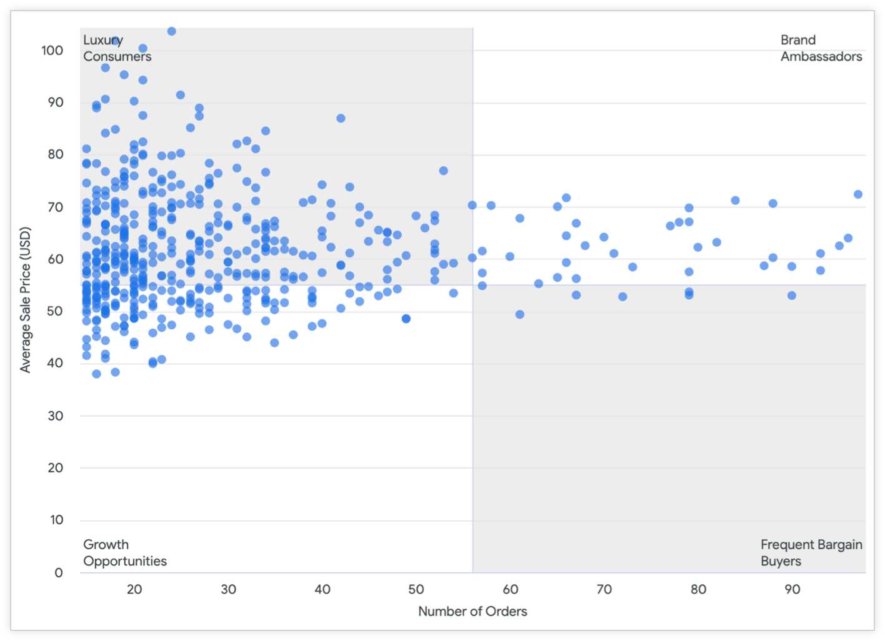
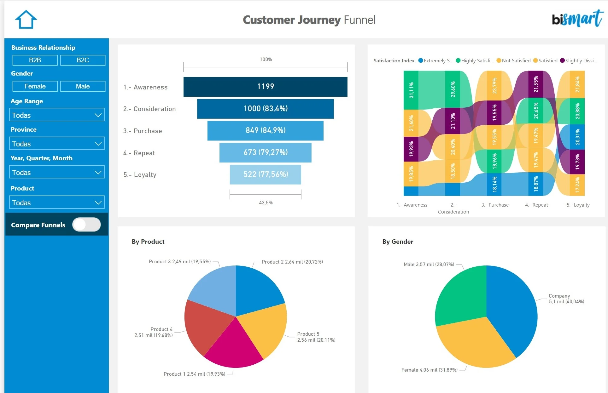

Proyectos Destacados
Algoritmos de Búsqueda de Patrones Periódicos en Bases de Datos Espacio-Temporales
Participé en un proyecto de investigación orientado a mejorar algoritmos de detección de patrones
en grandes volúmenes de datos espacio-temporales. Implementé y optimicé estos algoritmos usando
Python y SQL, y utilicé Power BI para visualizar los resultados. El rendimiento de los algoritmos
mejoró en un 35 %, facilitando la interpretación de patrones temporales repetitivos en los datos.
Tecnologías: Python, SQL, Power BI

Análisis de Ventas y Segmentación de Clientes para una PyME
Analicé datos de clientes y productos para una tienda en línea, identificando patrones de compra
mediante técnicas de segmentación como RFM y K-Means. Usé Python y Power BI para procesar y
visualizar
los datos. Como resultado, se diseñaron campañas de marketing más efectivas, aumentando la retención
de clientes en un 20 %.
Tecnologías: Python (pandas, scikit-learn), Power BI, MySQL,
Excel

Integración de Datos de Producción con ERP (SAP)
Desarrollé una solución para automatizar reportes de producción en un entorno simulado de SAP,
integrando datos en tiempo real desde sensores de planta. Utilicé Excel (Power Query, macros), SQL
Server
y Power BI para construir reportes interactivos, lo que redujo en un 50 % el tiempo dedicado a la
generación
de informes manuales.
Tecnologías: Excel (macros, Power Query), SQL Server, Power BI,
SAP
simulado
